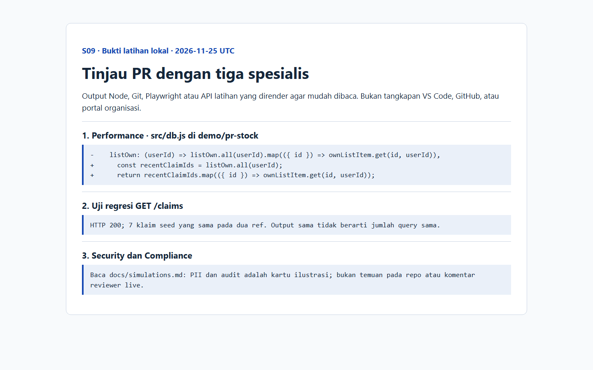
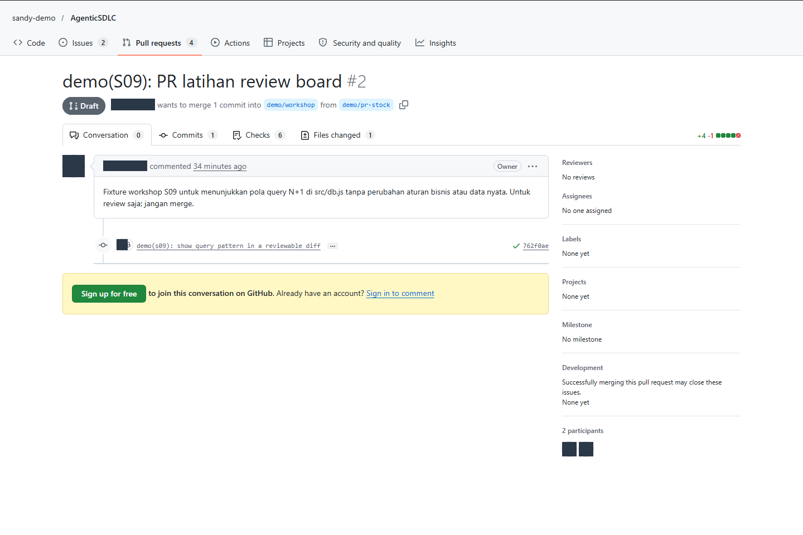
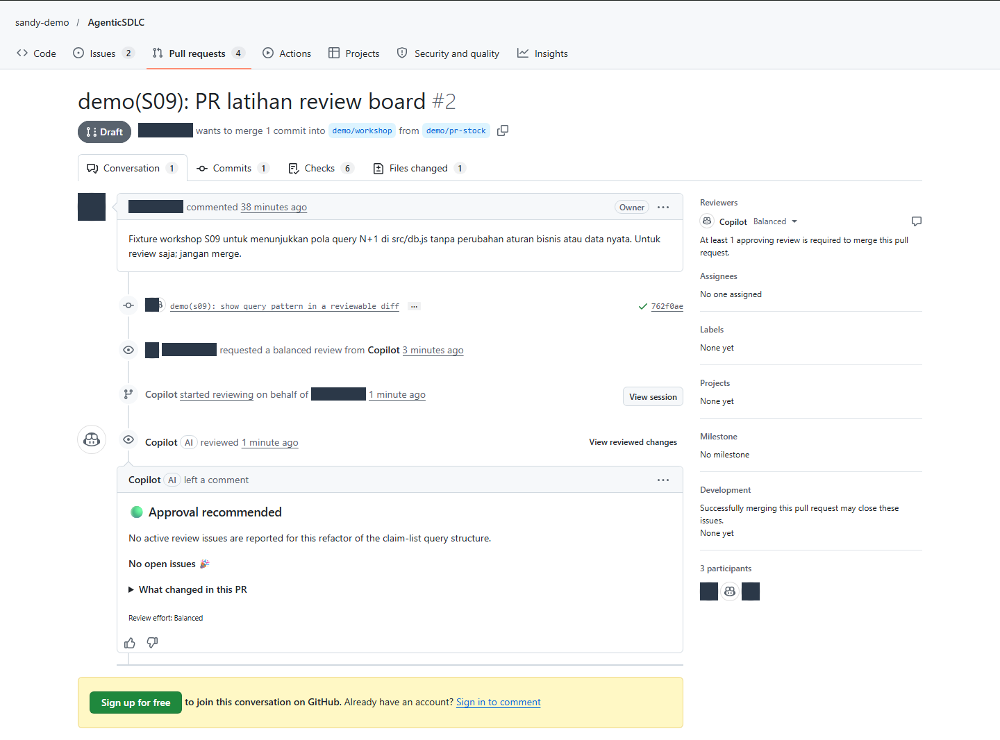

S09 · Level 3 — Tim virtual
Tinjau PR dengan tiga spesialis
Jalankan tiga reviewer read-only: Security, Performance dan Compliance. Manusia memvalidasi dan memublikasikan draf komentar.
Sudah diuji secara lokal. 1 review Copilot dan 3 sesi spesialis selesai · komentar [SEV-…] belum ada. Ikuti langkah · Ulangi dari awal.
Masalah yang dihadapi
Sari tidak bisa sendirian menguji performa, privasi, dan audit tiap PR.
Kerugian: Defect non-fungsional baru terlihat setelah rilis.
Masalah pada baseline
src/db.js
Lihat potongan atau catatan sumber
listOwn.all(userId).map(({ id }) => ownListItem.get(id, userId))Solusi dan alur
Jalankan tiga reviewer read-only: Security, Performance dan Compliance. Manusia memvalidasi dan memublikasikan draf komentar.

- Draft PR membagikan diff kepada tiga reviewer.
- Security memeriksa privasi.
- Performance memeriksa query berulang.
- Compliance memeriksa audit trail.
- Bima membaca ringkasan dengan bukti masing-masing.
Lihat sumber Mermaid
flowchart TB
pr["Draft PR"] -->|Bagikan diff| sec["Security · privasi"]
pr -->|Bagikan diff| perf["Performance · N+1"]
pr -->|Bagikan diff| comp["Compliance · audit"]
sec -->|Drafkan bukti| summary["Ringkasan berisi severity"]
perf -->|Drafkan bukti| summary
comp -->|Drafkan bukti| summary
summary -->|Minta keputusan| lead["Bima · Tech Lead"]
classDef human fill:#e5eeff,stroke:#315699,color:#132d5b
classDef ai fill:#efe6ff,stroke:#7354a4,color:#382459
class lead human
class sec,perf,comp aiLangkah demo
Bandingkan diff stock
Cari recentClaimIds.map dan ownListItem.get di src/db.js. Untuk tujuh klaim, pembacaan per baris adalah risiko N+1. Cek output GET /claims tetap sama sebelum mengusulkan satu query.
git diff v0-baseline demo/pr-stock -- src/db.js
Perbesar S09-local-result.pngSumber: Output lokal yang dirender · bukan layar portal. Output pemeriksaan lokal S09: Performance · src/db.js di demo/pr-stock; Uji regresi GET /claims; Security dan Compliance. Jalankan tiga sudut review
Di draft PR S04 dan stock, buka reviewer di sidebar → Copilot bila tersedia. Jalankan security-reviewer, perf-reviewer, compliance-reviewer pada PR latihan; minta file/baris, severity, bukti dan saran tanpa mengubah kode.
Review PR latihan dari sudut peranmu. Sebut file, baris, severity, bukti dan saran. Jangan edit atau merge.Pisahkan bukti dari dugaan
Pada Conversation, tunggu komentar tervalidasi. N+1 dapat dibuktikan. Untuk PII dan audit, verifikasi source lebih dulu; jangan berpura-pura ada temuan. Bima memprioritaskan temuan sebelum memutuskan.
docs/simulations.md

Sebelum dan sesudah


Perbesar S09-before.pngS09-after.png| Bagian | Sebelum | Sesudah / target |
|---|---|---|
| Perilaku | Stock branch dengan satu query daftar ID ditambah query per klaim. | Uji lokal: output 7 klaim sama. Temuan PII/audit hanya ilustrasi. Review bawaan memberi komentar; draf spesialis belum dipublikasikan. |
| Bukti visual | Belum direkam. | Belum direkam. |
| Keputusan | Peserta membaca keadaan awal. | Manusia memeriksa hasil sebelum meneruskan. |
Manfaat
- Review manusia tetap memutuskan temuan mana yang menghalangi merge.
Bukti dan sumber
Hasil di bawah diperiksa pada 2026-11-25 UTC. 1 review Copilot dan 3 sesi spesialis selesai · komentar [SEV-…] belum ada. Pembacaan data lokal tidak membuktikan agent, PR, scanner, atau fitur organisasi sudah berjalan.
Bukti GitHub live
Di draft stock #2, Copilot Code Review memberi satu komentar. API mengonfirmasi sesi Security, Performance dan Compliance selesai. Profilnya hanya menyusun draf untuk ditinjau manusia, sehingga 0 komentar [SEV-…] dipublikasikan. Draft S04 belum memiliki diff untuk direview. Layar sesi spesialis masih memerlukan login.


Perbesar S09-builtin-review.pngTemplate issue S09 di GitHub · Data latihan dan pengukuran
Belum direkam · 3 layar yang belum ada
S09-01-three-sessions.pngS09-02-comments.pngS09-after.png
Ulangi latihan
Pemeriksaan tidak menulis kode atau data remote. Ulangi perintah di terminal baru bila sebelumnya mengubah variabel lingkungan.
npm run reset -- --fresh